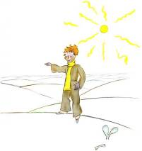
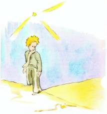

Quand on veut faire de l’esprit, il arrive que l’on mente un peu. Je n’ai pas été très honnête en vous parlant des allumeurs de réverbères. Je risque de donner une fausse idée de notre planète à ceux qui ne la connaissent pas. Les hommes occupent très peu de place sur la terre. Si les deux milliards d’habitants qui peuplent la terre se tenaient debout et un peu serrés, comme pour un meeting, ils logeraient aisément sur une place publique de vingt milles de long sur vingt milles de large. On pourrait entasser l’humanité sur le moindre petit îlot du Pacifique.
Les grandes personnes, bien sûr, ne vous croiront pas. Elles s’imaginent tenir beaucoup de place. Elles se voient importantes comme des baobabs. Vous leur conseillerez donc de faire le calcul. Elles adorent les chiffres : ça leur plaira. Mais ne perdez pas votre temps à ce pensum. C’est inutile. Vous avez confiance en moi.
Le petit prince, une fois sur terre, fut donc bien surpris de ne voir personne. Il avait déjà peur de s’être trompé de planète, quand un anneau couleur de lune remua dans le sable.
– Bonne nuit, fit le petit prince à tout hasard.
– Bonne nuit, fit le serpent.
– Sur quelle planète suis-je tombé ? demanda le petit prince.
– Sur la Terre, en Afrique, répondit le serpent.

– Ah !… Il n’y a donc personne sur la Terre ?
– Ici c’est le désert. Il n’y a personne dans les déserts. La Terre est grande, dit le serpent.
Le petit prince s’assit sur une pierre et leva les yeux vers le ciel :
– Je me demande, dit-il, si les étoiles sont éclairées afin que chacun puisse un jour retrouver la sienne. Regarde ma planète. Elle est juste au-dessus de nous… Mais comme elle est loin !
– Elle est belle, dit le serpent. Que viens-tu faire ici ?
– J’ai des difficultés avec une fleur, dit le petit prince.
– Ah ! fit le serpent.
Et ils se turent.
– Où sont les hommes ? reprit enfin le petit prince. On est un peu seul dans le désert…
– On est seul aussi chez les hommes, dit le serpent.
Le petit prince le regarda longtemps :
– Tu es une drôle de bête, lui dit-il enfin, mince comme un doigt…

– Mais je suis plus puissant que le doigt d’un roi, dit le serpent.
Le petit prince eut un sourire :
– Tu n’es pas bien puissant… tu n’as même pas de pattes… tu ne peux même pas voyager…
– Je puis t’emporter plus loin qu’un navire, dit le serpent.
Il s’enroula autour de la cheville du petit prince, comme un bracelet d’or :
– Celui que je touche, je le rends à la terre dont il est sorti, dit-il encore. Mais tu es pur et tu viens d’une étoile…
Le petit prince ne répondit rien.
– Tu me fais pitié, toi si faible, sur cette Terre de granit. Je puis t’aider un jour si tu regrettes trop ta planète. Je puis…
– Oh ! J’ai très bien compris, fit le petit prince, mais pourquoi parles-tu toujours par énigmes ?
– Je les résous toutes, dit le serpent.
Et ils se turent.